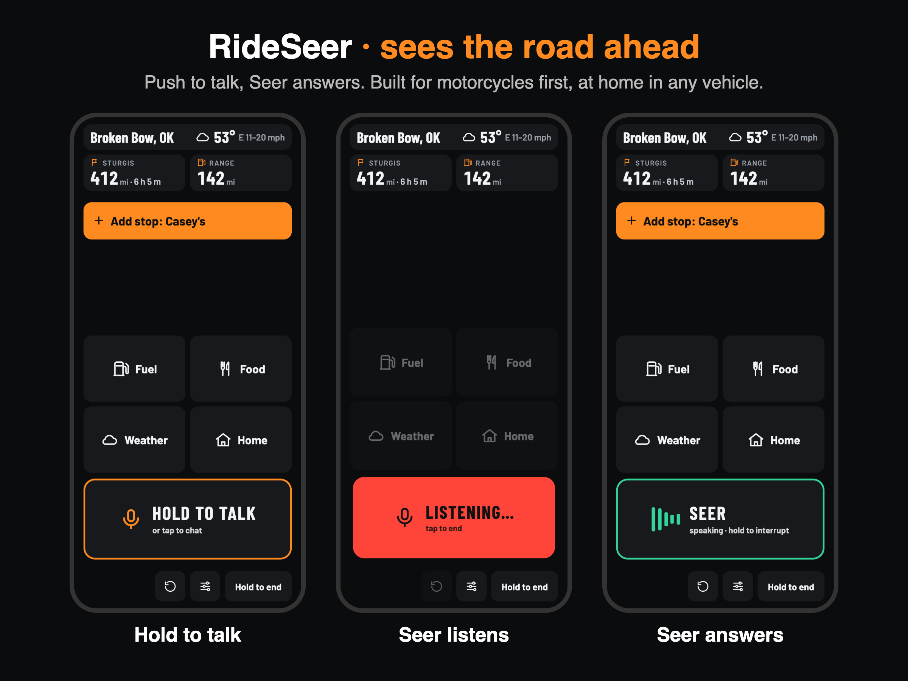

RideSeer
RideSeerRideSeer sees the road ahead,
so you can focus.
A hands-free journey co-pilot, built for motorcycles first. Press one button, ask out loud, and Seer answers in your helmet. It knows where you are, which way you're heading, the weather and your trip.
Ask for early accessAndroid, invite-only while we test. iPhone isn't ready yet.

Keep the apps you love. Add hands-free.
RideSeer doesn't replace anything. Google Maps still guides you and your music app still plays. RideSeer sits on top of them, so you can use them without touching the screen.
Ask out loud
"Where's the next gas station ahead, and is it open?" Places ahead of you come first, with road distance and drive time.
Send it to Maps
"Take me there." The place goes straight into Google Maps, as a stop or a new route.
Your trip
"I'm riding to Sturgis." Later: "How much further?" Miles and time left follow the road ahead.
Mark the moment
"Mark this spot, great overlook." Later: "How far back was that overlook?"
Your music, hands-free
Double tap to pause or resume, or "Play Tom Petty."
Gloves-friendly
Talk with your helmet button, a floating button over Maps, a rugged phone's Active key, or the big on-screen bar.
Two ways to ride
Set it up the way your screen and your taste like best.
Split screen
Best on a tablet. RideSeer sits beside Maps, with the big talk bar always in reach and your town, weather and trip at a glance.
Floating button
Best on a phone, or if you like Maps full screen. A small talk button floats over Maps: hold to talk, or tap to chat. Turn it on in RideSeer's Settings.
Either way
A helmet button, or a rugged phone's Active key, talks to Seer without touching the screen.
Seer watches out for you
Without being asked, Seer gives a short heads-up, once, then gets out of the way:
- Rain, storms or snow moving in where you'll be in the next hour
- Sunset coming, so you're not caught out after dark
- A big temperature drop coming (time for the liner)
- Strong gusts
Turn any of them off by just saying so.
Built for motorcycles first
On a bike you'll need a Bluetooth helmet headset; a phone speaker is no match for wind. RideSeer also works in a car, truck, side-by-side or overland rig, where the phone speaker is fine. It never gives turn-by-turn directions: your nav app does that. If your car has Android Auto, use Google's assistant there: RideSeer is for bikes and vehicles without it.